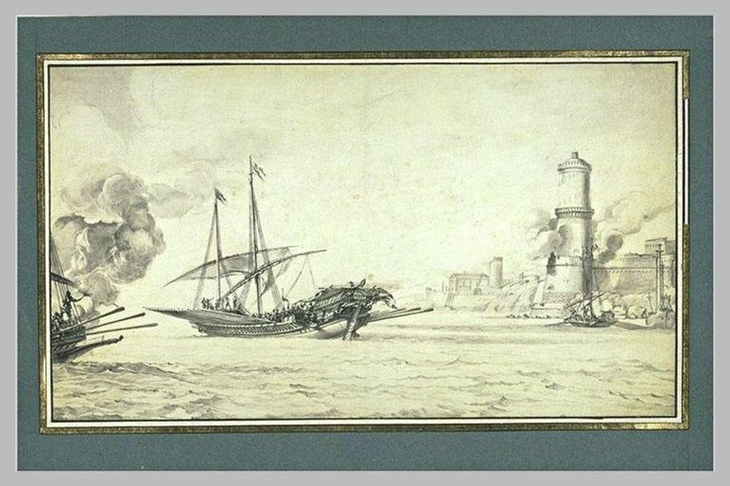
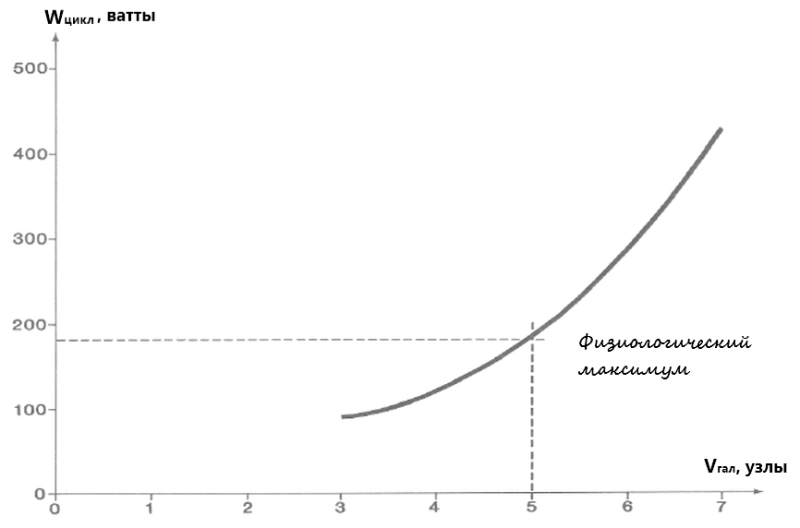
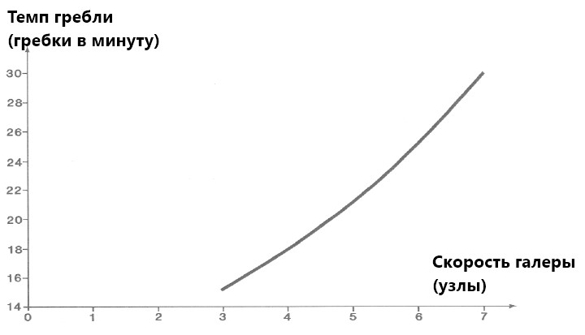
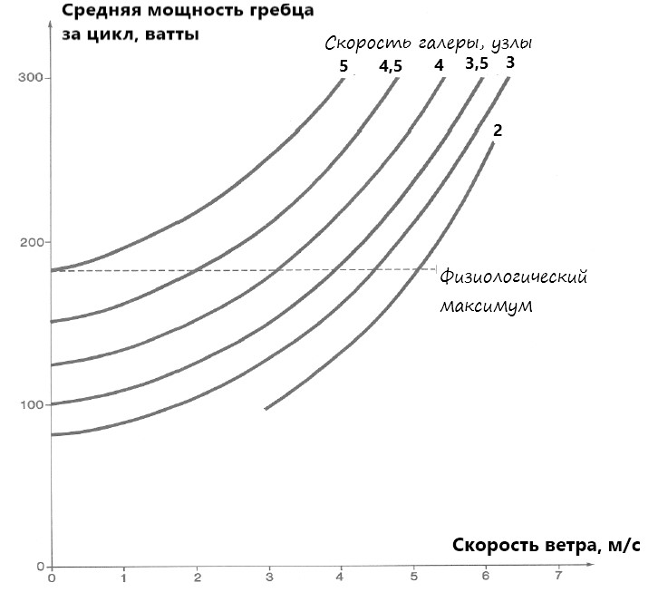
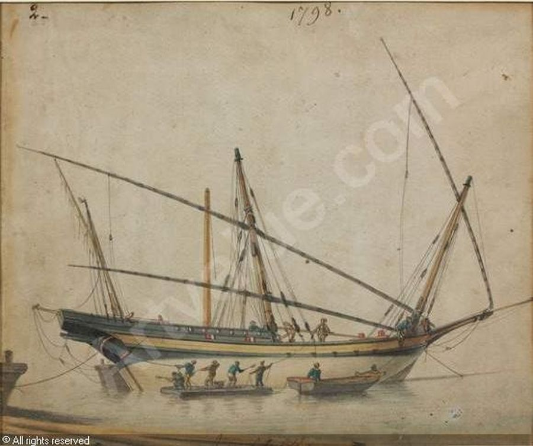

Фрагмент рисунка Пьера Пюже «Галера салютует на рейде Марселя» (1655), Musée des Beaux Arts, Marseille.
Специалисты по физиологии подсчитали, что обычный человек может развивать мощность 140 ватт в течение 10 часов, 170 ватт на протяжении 4 часов и 200 ватт – в течение только одного часа (Scherrer, J., Précis de physiologie du travail, Paris, 1981)
В наших расчетах мы установили, что при скорости галеры 5 узлов, при отсутствии встречного ветра и при темпе гребли 21 гребок в минуту, при чистом и хорошо смазанном корпусе (шероховатость 0,2 мм) загребной развивает среднюю мощность 183 ватта (производимая работа 522,4 дж за 2,857 сек). Т.е. загребной работает близко к пределу своих физических возможностей.

При такой нагрузке физические силы покидают гребца через один час работы при скорости галеры 5 узлов.
Комит королевской галеры Масс (Masse) писал в своих заметках по управлению галерами:
En sortant du port, supposez que le temps soit calme, l'usage des galères du roy est de faire voguer avant tout pendant quatre orloges, ce qui fait deux heure
Выйдя из порта при спокойном море, королевские галеры должны идти в режиме avant tout в течение четырех склянок, что равно двум часам.
В случае нашей галеры рекомендация Масса означает, что лишь один час из двух предписанных галера может идти со скоростью 5 узлов, после чего ей необходимо снизить скорость хотя бы до 4 узлов. Если же патрон галеры пожелает увеличить темп гребли до 26 гребков в минуту (один гребок за 2,3 сек), скорость галеры достигнет 6 узлов, но эта скорость потребует от загребного развить мощность 300 ватт, почти половину лошадиной силы. Такой темп гребцы смогут выдержать не более 15 минут.

Ясно, что приемлемым решением в этом случае будет переход галеры с режима avant tout, когда гребут все гребцы, на режим à quartier, когда по очереди задействованы носовая и кормовая группа гребцов. Длительность смены не превышала двух часов, но это давало возможность незадействованной смене отдохнуть, а если требуется – то и спокойно принять пищу. Зато это давало возможность поддерживать приемлемую скорость хода на протяжении до 10 часов без истощения сил гребцов. При темпе гребли 23 гребка в минуту и скорости 4 узла загребному требовалось поддерживать мощность 174 ватта, что уже значительно ниже предельных 200 ватт. Если же гребцы уставали, мудрый комит переходил на темп 20 гребков в минуту, когда при скорости 3,5 узла загребной затрачивал всего 136 ватт.
Но давайте вспомним, что до сих пор мы подразумевали, что галера находится практически в идеальных условиях, при отсутствии встречного ветра. Рассмотрим такой сценарий. Галера выходит из порта в другой порт, расположенный на расстоянии приблизительно 30 морских миль. Преодолев половину маршрута в режиме à quartier, галера попала в полосу слабого встречного ветра скоростью 2 м/с. Условия перехода не позволяют изменить курс, чтобы поставить парус. Тогда комит подает команду «Avant tout!», чтобы не потерять ход. Гребут все гребцы, но этот режим не может продолжаться более одного часа. До якорной стоянки еще не менее трех часов. В это время легкий бриз превращается в умеренный встречный ветер скоростью 3-4, временами до 5 метров в секунду. Такой ветер, обычный для парусных судов, его даже особо не отмечали в бортовых журналах, для галеры становится крайне неблагоприятным обстоятельством. Скорость галеры падает до 3,5, затем до 2 узлов, несмотря на то, что загребной выходит на предел своих физических возможностей. Если же встречный ветер достигнет скорости 6 м/с, галера вовсе прекращает продвижение по курсу. У патрона не остается других решений, кроме как поменять курс. Вывод – галера не способна преодолевать встречный ветер скоростью более 5 м/с.

Мощность, развиваемая гребцом за один цикл гребли в зависимости от скорости встречного ветра (чистый корпус и обычный режим гребли)
Состояние корпуса является также существенным фактором. При скорости 5 узлов разница в необходимой мощности гребцов между чистым и смазанным корпусом (шероховатость 0,2 мм) и грязным корпусом (шероховатость 0,5 мм) различается на 15 %. Не удивительно поэтому, что командование галер настаивало на проведении кренования и смазки корпуса горячей смесью топленого сала и гудрона (эта операция называлась espalmage) не реже одного раза в месяц на протяжении кампании галеры.

Работы по очистке корпуса корабля при креновании. Художник ROUX Antoine Joseph Ange (1798)
Интендант галер Арнуль так писал по этому поводу
Quant une galère est espalmée à plein, elle va bien plus gayement, et soulage la chiourme comme un carosse gressé
Когда галера основательно очищена и смазана, она бежит намного резвее, подобно хорошо смазанной повозке, и значительно облегчает работу гребцов.
На этом мы остановимся, чтобы вновь вернуться к навигационным инструментам эпохи Дрейка. Это отступление было временным и предпринято было всего лишь для того, чтобы высказать сомнение в том, что КПД галеры «никакое и стремится куда-то в ноль». По крайней мере, он в разы больше чем у паровоза )